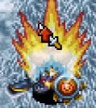
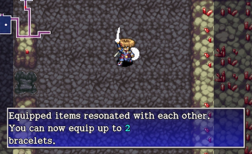
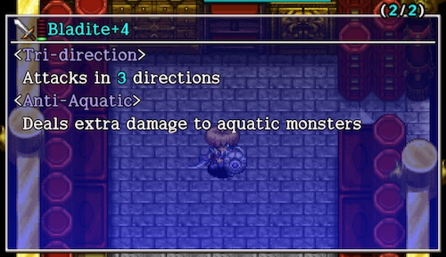
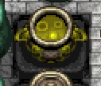
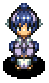
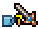
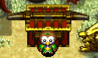

Gameplay Basics
This page offers introductory information for Shiren 5's main gameplay mechanics.
Shiren
Experience Points
→ Exp Table
Abilities
Special attacks that can only be used at night.
→ Abilities
Fullness
Shiren has a fullness gauge (FG), and takes 1 damage per turn once it reaches 0.
Fullness decreases by 1 every 10 turns, so you'll want to periodically eat food to replenish fullness.
Status Conditions
Super Status
Shiren's status will change as you defeat enemies during an adventure.
- Regular → Awakened-ish → Super

■ Super Status ■
- Direct attacks can randomly inflict Asleep, Confused, Blind, Paralyzed, Sealed, Berserk, or Shadow Bound status.
- An additional bonus occurs every time you defeat 10 enemies:
- Boost attack (3 floors)
- Boost defense (3 floors)
- Gain Swift status (50 turns / 100 turns from Shiren's perspective)
- Gain Tinkerer status (2 floors)
- Gain Fast Striking status (50 turns)
- Gain Precise status (50 turns)
- Of these effects, attack and defense boosts stack up to 8 stages.
■ Deactivation ■
Super status can deactivate due to the following:
- Become afflicted by an ailment.
- Step on a trap.
- Hunger message is displayed. (20 and 10 remaining fullness)
- 0 fullness.
- HP display is red. (Current HP is less than 30% of max)
※ The "0 fullness" and "HP display is red" conditions perform a check every turn.
HP Regeneration
Shiren's HP regenerates as he walks or steps in place (A+B). (HP won't regenerate when any other action is performed)
HP regeneration speed is linked to max HP in Shiren 5, and slows down as your max HP increases.
Turns that restore 0 HP are introduced from 102 HP, and increase in frequency until you finally only restore 1 HP every 2 turns.
| Max HP | HP Restored | Interval | Per Turn |
|---|---|---|---|
| 15 ~ 50 | 1,2 | 2T | 1.50 |
| 51 ~ 66 | 1,1,1,2 | 4T | 1.25 |
| 96 ~ 101 | 1 | 1T | 1.00 |
| 102 | 1,1,1... 0 | 50T | 0.98 |
| 104 | 1,1,1... 0 | 23T | 0.96 |
| 124 | 1,1,1,0 | 4T | 0.75 |
| 200 ~ | 1,0 | 2T | 0.50 |
Damage Calculation
[ Attack * Variance / 100 - Defense ] * Type Multiplier
Source: ダメージ計算 - 組長式(アーカイブ)
Attack Accuracy
■ Direct Attacks ■
92% without a weapon.
Accuracy increases while equipped with a leveled up weapon.
The Redeeming rune raises accuracy to 100% for 1 hit after 2 misses.
| Weapon Level | Lv1~3 | Lv4~5 | Lv6~7 | Lv8 |
|---|---|---|---|---|
| Accuracy | 92% | 93% | 94% | 95% |
■ Projectiles ■
84%
■ Monster Direct Attacks ■
88% under normal circumstances.
Accuracy decreases if a Spry Shield is equipped. (Shiren's evasion increases)
The Agile rune is equivalent to Spry Shield Lv1, so it's 78%.
| Spry Shield Level | Lv1 | Lv2 | Lv3 | Lv4 | Lv5 | Lv6 | Lv7 | Lv8 |
|---|---|---|---|---|---|---|---|---|
| Accuracy | 78% | 75% | 72% | 69% | 66% | 63% | 60% | 57% |
Source: 攻撃の命中率 - 組長式(アーカイブ)
Item
Equipment Resonance
Certain weapons and shields activate special effects when equipped at the same time.
→ Resonance

Equipment Growth
- Weapons and shields earn equipment experience points when you defeat an enemy using a direct attack.
※ You don't earn equipment experience points if you defeat enemies using projectiles, abilities, magic bullets, etc.- The item's name changes, and strength, upgrade limit, and rune count increase.
Weapons or shields can also gain runes through leveling up, and have a maximum level of 8. - Equipment experience points can't be seen, and each monster grants a predetermined amount.
Generally, stronger / higher level monsters offer more equipment experience points. - Equipment levels up once the equipment experience points total reaches the item's assigned threshold.
- The item's name changes, and strength, upgrade limit, and rune count increase.
Blessing, Curse, Seal
Items can be blessed, cursed, or sealed. (excluding arrows, rocks, and talismans)
They can occasionally be found on the ground with these statuses,
and you won't be able to determine an unidentified items's status until you use it.
Once an item is identified, it's current status will be shown through an icon.
| Icon | Type | Basic Effect |
|---|---|---|
 |
Blessing | Boosted effect. |
 |
Curse | Can't unequip. |
| Seal | Unable to be used. |
The effects of these statuses differ based on item category. (see the table below)
- Gaining a status
- Blessing: Blessing Scroll, Blessing Pot, night monster drop.
- Curse: Curse Trap, Curse Girl's special attack, Imabikiso, Curse Scroll, Curse Pot.
- Seal: Curse Trap, item is stolen by a Bad Zalokleft (Lv1~3), Imabikiso, Curse Scroll, Curse Pot.
- Removing a status
- Curse, Seal: Exorcism Scroll, Exorcism Pot, Curse Breaker, Fate Scroll, Earth Scroll, Plating Scroll, bless the item.
- Anti-Crs. Bracelet protects an item from getting cursed or sealed.
Effect details by item category:
| Item | Blessed | Cursed | Sealed |
|---|---|---|---|
| Weapon | Increased attack (chance to wear off) |
Can't unequip | Upgrade value and runes are nullified, doesn't gain equipment exp |
| Shield | Increased defense (chance to wear off) |
Can't unequip | Upgrade value and runes are nullified, doesn't gain equipment exp |
| Bracelet | Can't be cursed / sealed (chance to wear off) |
Can't unequip | Bracelet's effect is nullified |
| Arrow, Rock | - | - | - |
| Staff | Doubled effect (chance to wear off) |
- | Unable to be used, no effect when thrown |
| Talisman | - | - | - |
| Scroll | Reusable (some exceptions*1) |
- | Unable to be used |
| Grass | Doubled effect (some exceptions*1) |
- | Unable to be used, no effect when thrown |
| Pot | Can't be cursed, sealed, or turned into an onigiri (chance to wear off) |
- | Can't use [Insert] or [Open] commands, can't be filled by Bored Kappas or Scoopies |
| Food | Doubled effect, peaches gain a bonus |
- | Unable to be used |
| Torch | Doubled duration | - | Can't be equipped |
| Point Card | Gain double points (wears off after 1 use) |
- | Unable to be used |
*1 exceptions:
- Scroll
- Extraction Scroll - Blesses all extracted items, but can't be reused.
- Grass
- Upgrade Seed - Effect is active for the duration of the current floor. (normally 100 turns)
- Revival Grass, Undo Grass, Repeat Grass - Reusable.
Synthesis
Synthesize weapons and shields to merge special abilities, and combine staves to add use counts together.

- Synthesis Effects
- Weapon, shield: The first item acts as the base, and runes and upgrade value of subsequent items are added to it.
- Each piece of equipment has a "rune count", and no more runes can be added once you reach the limit.
- Innate runes get stronger as the piece of equipment levels up, but runes are always equal to the Lv1 effect.
→ Rune Multipliers
- Staves: Add use counts together. Can only combine same name staves.
- Weapon, shield: The first item acts as the base, and runes and upgrade value of subsequent items are added to it.
- Different Category Synthesis
- Normally you can only synthesize weapons with weapons, or shields with shields.
However, certain different category items can be synthesized using Mixers to add runes as well.- Example: Weapon + Dragon Grass = Anti-Dragon rune.
- See Runes List for all possible combinations.
- Normally you can only synthesize weapons with weapons, or shields with shields.
- Method 1: Synthesis Pots
- Insert same category items to synthesize them. (Weapons with weapons, shields with shields, staves with staves)
- Weapon, shield: The first item acts as the base, and runes and upgrade value of subsequent items are added to it
- Staves: Remaining uses are added together. Can only combine same name staves.
Throw an identified staff last to result in an identified staff.
- Method 2: Mixers
- Throw items at a Mixer family monster to synthesize them. (Different category items can be synthesized)
- Mixers won't swallow items when they're afflicted by certain status conditions.
- Will swallow items: Any status conditions besides the ones listed below.
- Won't swallow items: Napping, Asleep, Sound Asleep, Sealed, Paralyzed, S-Paralyzed, Onigiri, Tottering.
- Mixers turn toward the direction the item came from when they swallow an item.
- Blessed, Cursed, Sealed Status
- Synthesized items generally take on the status of the item that was inserted or thrown last.
- However, Mixer synthesis has varied priority based on item category, so you may get unexpected results.
- You can remove a seal or curse from a weapon by synthesizing the weapon with an Iron Arrow.
- Synthesized items generally take on the status of the item that was inserted or thrown last.
- Mixer Synthesis Priority
- The synthesis priority after throwing a weapon is weapon > grass > scroll > staff > talisman or arrow > pot > bracelet.
(This remains true even if items were thrown in a different order) - Example: If you throw a weapon → sealed staff → grass, the resulting weapon will be sealed,
since grass has a higher priority than staves. - It's fine to throw non-equipment category item(s) before the weapon or shield.
- The synthesis priority after throwing a weapon is weapon > grass > scroll > staff > talisman or arrow > pot > bracelet.
- Pushing Out Runes
- → Pushing Out Runes
- Common Mistakes
- Threw a Synthesis Pot while a Can. Arm Bracelet was equipped / Dracon Grass effect was active.
- Check equipped bracelets and current status beforehand.
- Main weapon vanished after being thrown at a Napping Mixer.
- Mixers function differently in Shiren 4 and 5, so always wake them up first.
- Stepped on an Explosion Trap / Pit Trap while walking over to the synthesized item after defeating the Mixer.
- Perform direct attacks over tiles to check for traps while approaching the item.
- Threw a weapon → Angel Seed → shield → Angel Seed at a Mixergon, but only the weapon gained a rune.
- Items that can be used to add runes to both weapons and shields always get synthesized to the first weapon or shield,
so use 2 different Mixer family monsters.
- Items that can be used to add runes to both weapons and shields always get synthesized to the first weapon or shield,
- A Pop Tank family monster destroyed the item after synthesizing using a Mixer.
- Use the Scout command to check for Pop Tank monsters on floors where they appear alongside Mixers.
- The resulting staff became sealed after combining same name staves.
- Always swing the staff you to intend to synthesize last to check if it's sealed.
- Threw a Synthesis Pot while a Can. Arm Bracelet was equipped / Dracon Grass effect was active.
New Items
Use Secret Pots located in the basement of Hotel Nekomaneki to add new abilities to existing items.
→ New Items

Catstones
Collect all 7 colors and clear Inori Cave to have a wish granted. (See Dungeon Overview for the list of wishes)
There are a number of different methods to obtain Catstones.
The list below is in the order of how easy it is to obtain all 7 colors.
- Tanuki Passwords
- Simply talk to the Tanuki near the stairs to the basemenet of Hotel Nekomaneki and input Tanuki Passwords.
※ Passwords can only be used once per save file.
- Simply talk to the Tanuki near the stairs to the basemenet of Hotel Nekomaneki and input Tanuki Passwords.
- Rescue Passwords
- Use Lost Well Pick-A-Choice Rescue Passwords.
(See Collecting Catstones for details)
- Use Lost Well Pick-A-Choice Rescue Passwords.
- Pick-A-Choice Shops
- Same as above, but search for a Pick-A-Choice shop on your own instead of using a Rescue Password.
- Purchase From Poo
- Text
- Clear Destiny's Descent
- Text
- Text
- Elite Stores
- Text
Dungeon
Allies
→ Allies
Wandering NPCs
→ Wandering NPCs

Dungeon Gimmicks
→ Dungeon Gimmicks
Shops
→ Shops
Monster House
→ Monster House
Traps
→ Traps
Day and Night
Text
Monsters
→ Monsters

Monster Auras
Text
Monster Spawns
Text
Facility
See Villages for an overview of available facilities.
Equipment Tags

Text
Storehouse
Text
Tanuki Passwords
Input passwords to receive items.
→ Tanuki Passwords
Sparrow's Shuttle
Lets you instantly travel to places you've been to before.
→ Sparrow's Shuttle

Other
Adventure Footprints
Expert Badges
Version Exclusive Features
DS
→ Streetpass
→ Wanderer Erasers
Vita, Steam
→ Trophies
Steam
→ Trading Cards
→ Point Shop
Switch, Steam
→ Music Collection